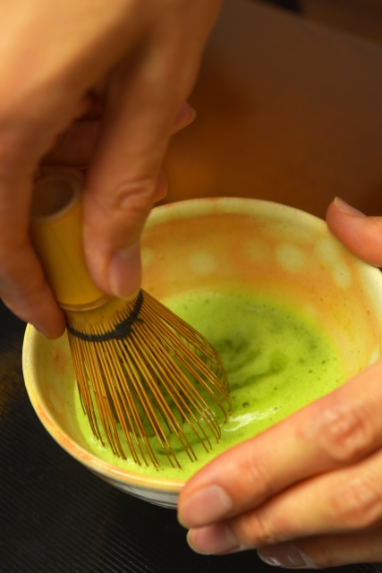

Production

Matcha is made from shade-grown tea leaves that also are used to make gyokuro. The preparation of matcha starts several weeks before harvest and may last up to 20 days, when the tea bushes are covered to prevent direct sunlight.[better source needed] This slows down growth, stimulates an increase in chlorophyll levels, turns the leaves a darker shade of green, and causes the production of amino acids, in particular theanine. Only the finest tea buds are hand-picked. After harvesting, if the leaves are rolled up before drying as in the production of sencha, the result will be gyokuro (jade dew) tea. If the leaves are laid out flat to dry, however, they will crumble somewhat and become known as tencha (碾茶). Then, tencha may be deveined, destemmed, and stone-ground to the fine, bright green, talc-like powder known as matcha.
Grinding the leaves is a slow process because the mill stones must not get too warm, lest the aroma of the leaves be altered. Up to one hour may be needed to grind 30 grams of matcha.
The flavour of matcha is dominated by its amino acids. The highest grades of matcha have a more intense sweetness and deeper flavour than the standard or coarser grades of tea harvested later in the year.